Taking on the role of a loyal companion in users' daily lives, the bot resembles a cute robot with adorable little feet. Its screen, masterfully rendered as an amiable face, serves as the entryway for a comforting conversation, its visually appealing and approachable design contributing to the emotional healing process.
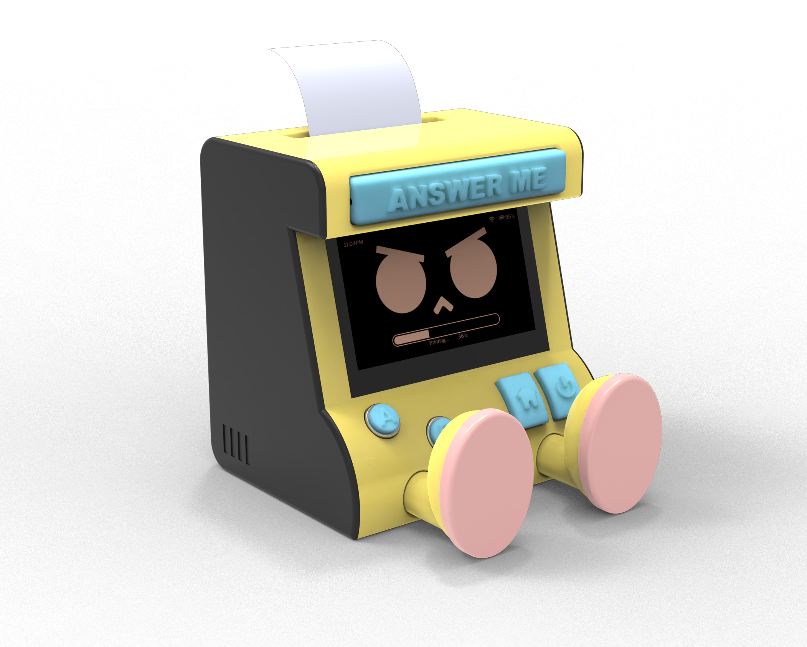
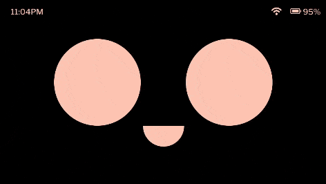
With the help of five well considered questions, users can embark on a therapeutic exploration that follows a tried-and-true therapeutic approach directly from the parent's App. This allows for a tailored, introspective path toward emotional well-being.
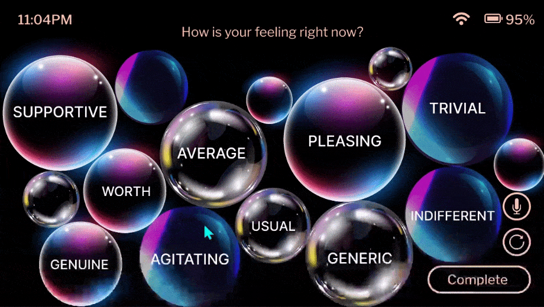
The interaction form of feedback is by clicking bubbles containing words that can describe current emotion, that word will grow bigger and others will shrink. Or using voice input to record.
To motivate patients to better implement instructions step by step, each stage will be held and printed accordingly, and they will not be able to start the next one until all stages are fulfilled.

Question Playground
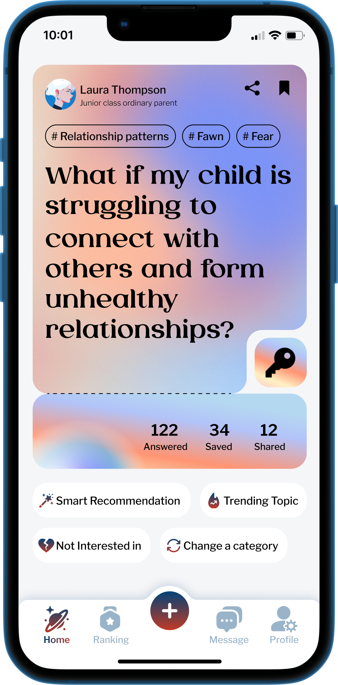
New Answer (Empty)
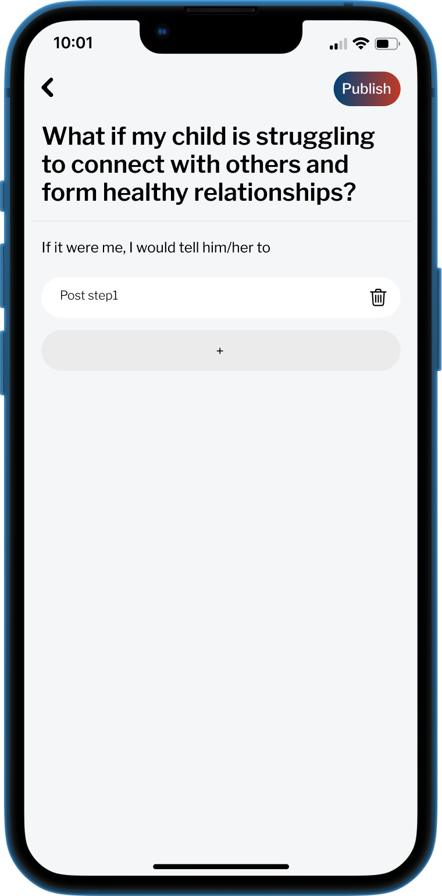
New Answer (Step1)
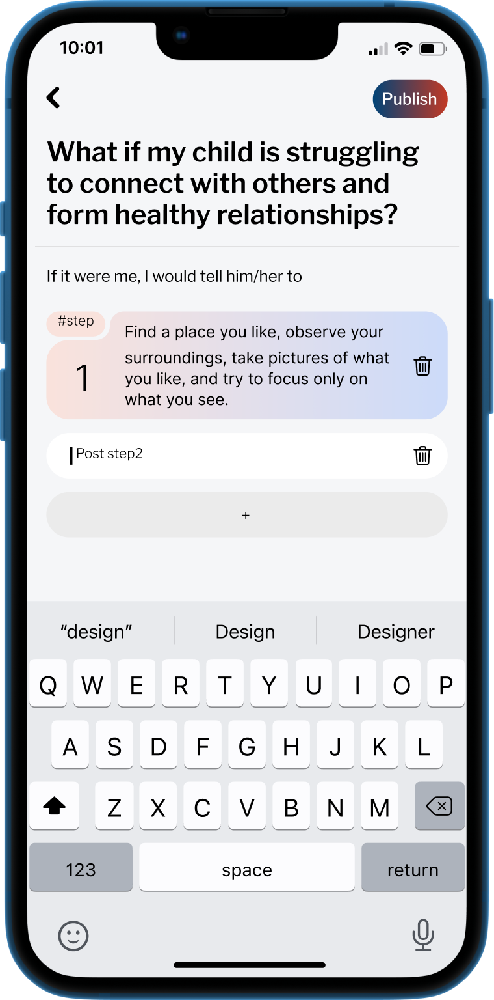
The playground encourages diverse responses, withholding access to the list of answers until users have submitted their own opinions.
The ranking mechanism is intricately linked to the specific responses and their reflections as articulated by the patients.
Users are able to see sepicific answer with its question listed in the "Ranking". And if they have already unlock the question (i.e. provide an answer), they will be able to see the whole list.
New Answer (Empty)
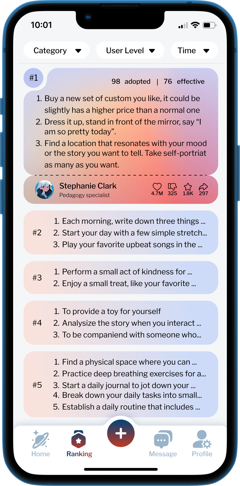
See Specific Answer
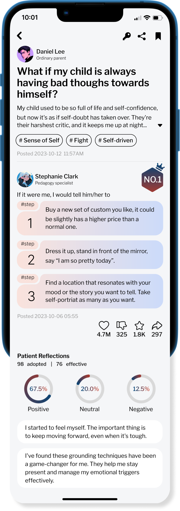
See Whole List after Unlocking
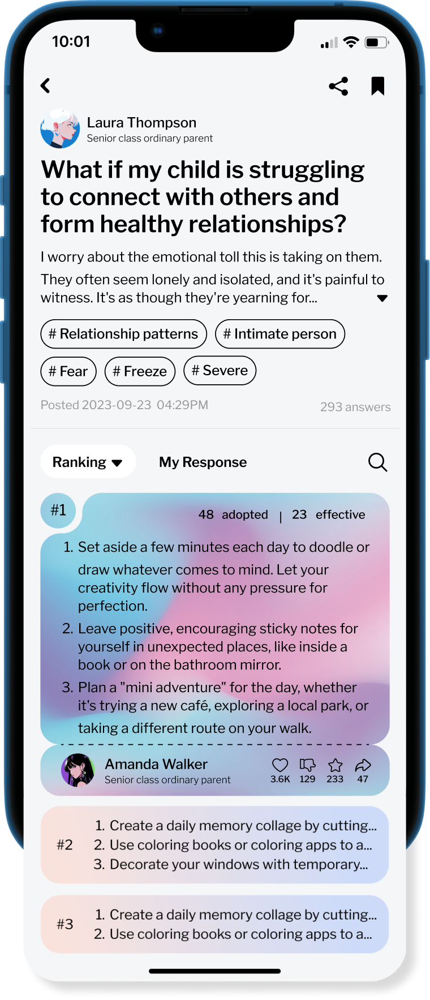
The fostering of a supportive community and the grading system not only facilitate the dissemination of valuable insights and experiences but also afford them an opportunity for self-reflection on their interactions with children.
New Question
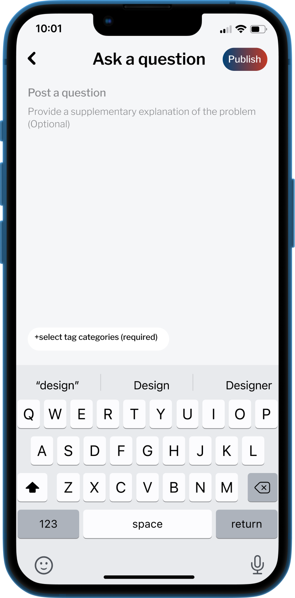
Select Tag
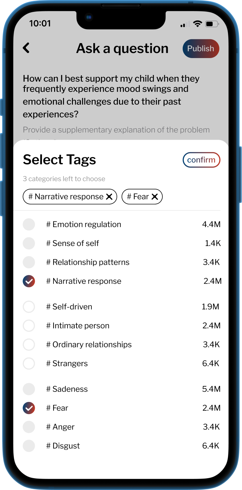
Messages
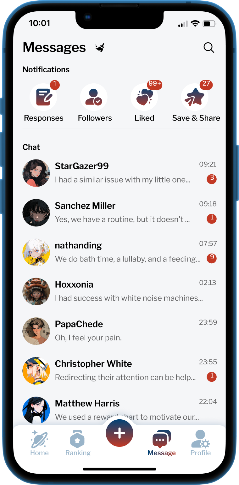
My Profile
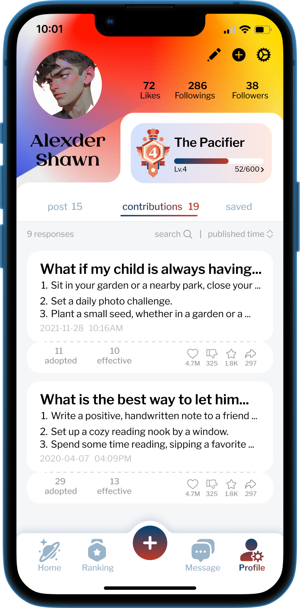
Friend’s Profile
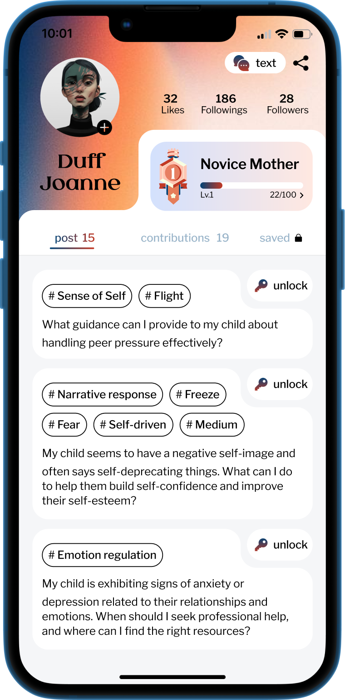